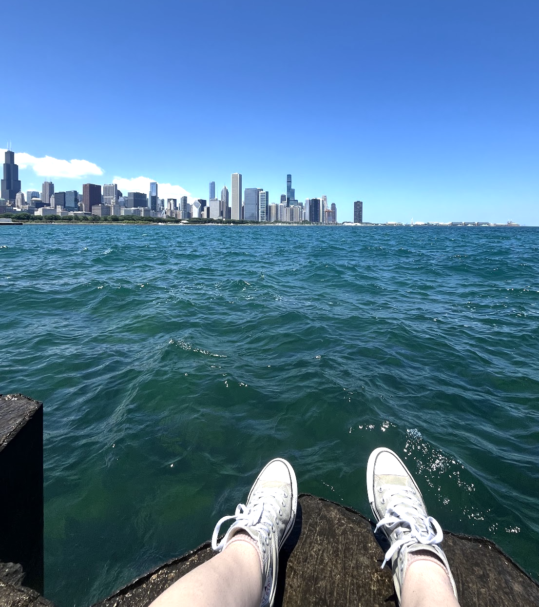

hi friends. Trying this instead of substack because it's more fun for me? idk.
here's my recent listening playlist. haven't kept up with it as much as i would have liked to. but that's chill! loving the latest album by friendship.
i haven't been making much music recently. just figured out how to do cool things with my omnichord and a microcosms hologram that i bought because steve marek told me to (shoutout Steve). was blessed by the presence of THE famous mason mann this week who helped me unlock that gosh darn pedal. look out for more beep boops. renamed my music projects to 'summer reading', feelin' like mouse rat w all these name changes.
impulse took the day off work yesterday to go downtown with mason. here's the view from near the planitarium. i forget how purdy the lake is

here's some outfits that I liked from this past week. had a blast at the charleston for my buddy's dressy golden bday (pic left) had good luck at the thrift on Thursday (pic mid) and am trying out long shorts (pic right).